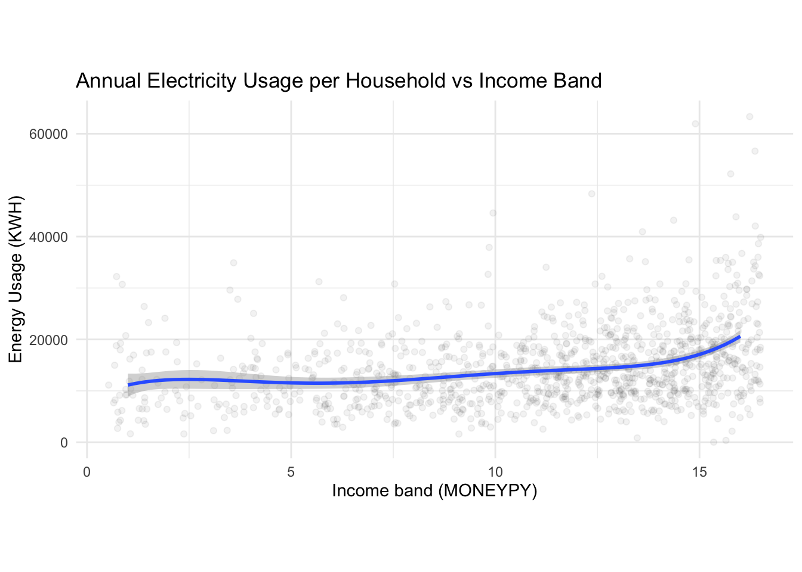
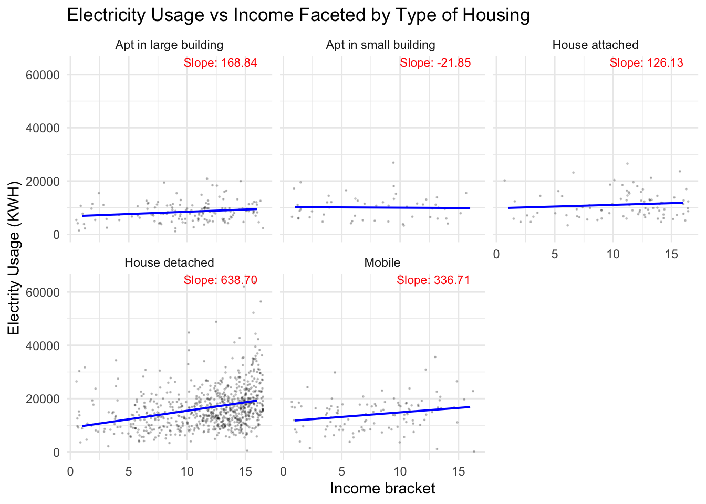

The goal of this study is to understand the factors contributing to higher household usage. Based on these factors, we can suggest effective policies, targetting households with specific socio-economic, geographical and habitual characteristics to reduce electrical usage. Before the results, we would like to highlight that instead of analyzing different types of factors (socio-economic, geographical, etc.), we tend to analyze these different categories together to provide more nuanced analysis and suggestions.
Reducing household electricity usage in the United States is crucial for several environmental, economic, and social reasons. The residential sector is a significant contributor to electricity demand, accounting for approximately 37% of total electricity consumption in 2021. By reducing household electricity usage, we can decrease carbon dioxide emissions, mitigate climate change, and lessen the strain on natural resources.
Please refer to Annex A for detailed documentation on categorization of variables:
The following object is masked from 'package:purrr':
map
Code
# Example dataset: Replace 'data' with your actual dataset# Calculate average consumption by statestate_consumption <- energy |>group_by(state_name) |>summarize(avg_consumption =mean(KWH), avg_cost =mean(DOLLAREL),avg_hdd65 =mean(HDD65),avg_cdd65 =mean(CDD65))# Load US map dataus_map <-map_data("state")# Match state_postal with full state names for joiningstate_consumption <- state_consumption |>mutate(state =tolower(state_name)) |>drop_na()# Merge map and consumption datamap_data <- us_map |>left_join(state_consumption, by =c("region"="state"))# Plotggplot(map_data, aes(x = long, y = lat, group = group, fill = avg_consumption)) +geom_polygon(color ="white") +coord_fixed(1.3) +scale_fill_gradient(name ="Avg. Electricity Usage (KWh)",low ="darkseagreen", high ="salmon", na.value ="gray90") +theme_minimal() +labs(title ="Average Annual Energy Consumption per Household by State",subtitle ="United States Energy Consumption Patterns",x =NULL,y =NULL ) +theme(axis.text =element_blank(),axis.ticks =element_blank(),panel.grid =element_blank() )
First from a macro perspective, we observe the map average annual energy consumption per household by state. We can evidently observe that the northern part of USA generally consumer less energy than the southern part of USA.
Code
library(patchwork) # For arranging plots# Plot for HDD65hdd65_plot <-ggplot(map_data, aes(x = long, y = lat, group = group, fill = avg_hdd65)) +geom_polygon(color ="white") +coord_fixed(1.3) +scale_fill_gradient(name ="Avg. HDD65",low ="lightblue", high ="darkblue", na.value ="gray90") +theme_minimal() +labs(title ="Average Heating Degree Days (HDD65)",x =NULL,y =NULL ) +theme(axis.text =element_blank(),axis.ticks =element_blank(),panel.grid =element_blank() )# Plot for CDD65cdd65_plot <-ggplot(map_data, aes(x = long, y = lat, group = group, fill = avg_cdd65)) +geom_polygon(color ="white") +coord_fixed(1.3) +scale_fill_gradient(name ="Avg. CDD65",low ="lightyellow", high ="red", na.value ="gray90") +theme_minimal() +labs(title ="Average Cooling Degree Days (CDD65)",x =NULL,y =NULL ) +theme(axis.text =element_blank(),axis.ticks =element_blank(),panel.grid =element_blank() )# Combine the two plots side by sidecombined_plot <- hdd65_plot + cdd65_plot +plot_layout(ncol =1)# Display the combined plotprint(combined_plot)
So does climate potentially impact electrical usage?
Intuitively, colder areas (which has significantly more average heating degree days, eg Vermont, Maine, Massachusetts) require electricity for heating, whereas hotter areas (which has significantly more average cooling degree days, eg Florida, Texas, Louisiana) require electricity for cooling.
Comparing the two maps, we noticed that the colder areas are in general spending less electricity in general than the hotter areas. Through further research, this is because majority of heating in the colder regions primarily rely on sources like natural gas, heating oil, and propane, with natural gas being the most common option in densely populated areas; meaning that electricity is not the primary source of heating in colder areas. This may cause the colder areas to use less electricity in general. On the other hand, AC relies mainly on electricity, therefore explaining the higher usage of electricity in hotter regions (areas with high cooling degree days).
Note: Average Cooling Days indicates the average amount of cooling required in a year or season, similar definition for Average Heating Days.
Code
library(forcats) # For fct_reorderlibrary(ggridges)custom_colors <-c("Subarctic"='purple',"Very-Cold"='cornflowerblue',"Cold"='skyblue',"Marine"='aquamarine',"Mixed-Humid"='palegreen',"Hot-Humid"='palegoldenrod',"Mixed-Dry"='lightsalmon',"Hot-Dry"='sandybrown')# Calculate the mean for each BA_climatemeans <- energy |>group_by(BA_climate) |>summarize(mean_kwh =mean(KWH, na.rm =TRUE))# Create ridge plot with mean pointsggplot(energy, aes(x = KWH,y =fct_reorder(BA_climate, KWH, .fun = mean, .desc =TRUE),fill = BA_climate)) +geom_density_ridges(alpha =0.7, scale =1) +# Ridge plotgeom_point(data = means, aes(x = mean_kwh, y =fct_reorder(BA_climate, mean_kwh, .desc =TRUE)), color ="black", size =3, shape =24, fill ="white") +# Add mean pointsscale_x_continuous(limits =c(0, 35000)) +# Limit x-axisscale_fill_manual(values = custom_colors) +# Custom fill colorslabs(title ="Ridge Plot of Energy Usage by climate",x ="Energy Usage (KWH)",y ="Climate",fill ="Environment type" ) +theme_minimal()
Picking joint bandwidth of 1260
Apart from temperature, the climate of the area also supplements the argument that the South consumes more electricty, where the humid areas consumes more energy than any other type of areas. Areas with hot-humid include areas like Florida, Texas and Lousiana. Based on this piece of analysis, energy policies would make bigger electrical savings in the south than on the north.
Code
# Sort state_consumption by avg_consumption in descending orderstate_consumption <- state_consumption |>arrange(desc(avg_consumption))# View the sorted datahead(state_consumption)
Based on this, we would like to focus on 3 of the states that has high annual electricity usage per capita and similar contexts (Louisiana, Mississipi and Florida; 1st, 3rd and 4th highest average electricity usage, and all near Gulf of Mexico) for more in-depth analysis on geographic, socio-economic and household characteristics. After filtering to these 3 states, there are still almost 2000 observations, supporting sufficient evidence for different types of analysis.
3.3 Zooming into Louisiana, Mississippi, Florida
Code
#Filtering dataselected_states <-c('LA', 'FL', 'MS')filtered_data <- energy |>filter(state_postal %in% selected_states)
3.4 Housing typology:
In the next section, we first analyze the urban characteristics that may also contribute to higher electricity usage.
Code
filtered_data <- filtered_data |>mutate(TYPEHUQ =case_when( TYPEHUQ ==1~"Mobile", TYPEHUQ ==2~"House detached", TYPEHUQ ==3~"House attached", TYPEHUQ ==4~"Apt in small building ", TYPEHUQ ==5~"Apt in large building",TRUE~as.character(TYPEHUQ))) |>mutate(KOWNRENT =case_when( KOWNRENT ==1~"Own", KOWNRENT ==2~"Rent", KOWNRENT ==3~"Occupy wo rent"))ggplot(filtered_data, aes(x =as.factor(TYPEHUQ), y = KWH, fill =as.factor(TYPEHUQ))) +geom_violin(trim =FALSE, alpha =0.7) +scale_fill_brewer(palette ="Set3") +scale_y_continuous(limits =c(0, 50000)) +labs(title ="Energy Usage by Housing Type",x ="Housing Type",y ="Energy Usage (KWH)",fill ="Housing Type" ) +theme_minimal() +theme(legend.position ="none")
Code
# Ridge plotggplot(filtered_data, aes(x = KWH, y =as.factor(UATYP10), fill =as.factor(UATYP10))) +geom_density_ridges(alpha =0.7, scale =1) +# Ridge plotscale_fill_manual(values =c("C"="skyblue", "U"="lightgreen", "R"="orange"),labels =c("Urban Cluster", "Rural", "Urban"))+scale_x_continuous(limits =c(0, 50000)) +labs(title ="Ridge Plot of KWH by UATYP10",x ="Energy Usage (KWH)",y ="Urban Type Code (UATYP10)",fill ="Urban Type", ) +theme_minimal()
Picking joint bandwidth of 1940
We first observe that people living in houses tend to use more electricity than apartments. In a more broad sense , people living in urban areas use more electricity than those in surburban (urban cluster) and rural areas (ridgeplot). Our observations suggest that policies should focus more on investigating electricity usage in single-family detached housing, as a higher proportion of households living in houses use more electricity. While this is understandable (since there are more areas that require additional electricity usage), it also means that effective policies regulating electricity use in such housing typologies could potentially have a more significant impact.
3.5 Socio-economic:
We also would want to understand how groups from various annual household income bands use electricity, ie whether richer households use significantly more energy.
Code
ggplot(filtered_data, aes(x = MONEYPY, y = KWH)) +geom_jitter(alpha =0.05, width =0.5, height =500) +geom_smooth(method ="lm", formula = y ~poly(x, 5)) +labs(title ="Regression Analysis: MONEYPY vs KWH (Jitter Applied, Outliers Removed)",x ="Money Spent (MONEYPY)",y ="Energy Consumption (KWH)") +theme_minimal()+theme(aspect.ratio =0.5)

We notice that in general, people with higher household income on average do tend to spend more energy. That said, it is important to observe the nuance within this, that there are much more variability within each classified income band. To further narrow down the specific demographic, we can observe the electricity used by various income bands used for different types of housing.
Code
# Calculate slopes for each TYPEHUQ groupslopes <- filtered_data |>group_by(TYPEHUQ) |>summarize(slope =lm(KWH ~ MONEYPY)$coefficients[2], .groups ="drop")# Add labels to the plot with slopesggplot(filtered_data, aes(x = MONEYPY, y = KWH)) +geom_jitter(size =0.2, alpha =0.2, width =0.5) +# Scatterplot with jittergeom_smooth(method ="lm", color ="blue", se =FALSE, size =0.7) +# Best-fit linefacet_wrap(~as.factor(TYPEHUQ)) +# Facet by TYPEHUQgeom_text(data = slopes, aes(x =Inf, y =Inf, label =sprintf("Slope: %.2f", slope) ), hjust =1.2, vjust =1.2, inherit.aes =FALSE, color ="red", size =3) +# Add slope labelslabs(title ="Electricity Usage vs Income Faceted by Type of Housing",x ="Income bracket",y ="Electrity Usage (KWH)" ) +theme_minimal()
`geom_smooth()` using formula = 'y ~ x'

We observe that single-family detached home tend to use more energy, especially as the income increases. This helps us suggest that it is especially helpful to target richer families living in single-family detached homes.
3.6 Household Habits
While we could conveniently argue that regions with more unfavorable hot weather (higher temperature) inevitably need to spend more electricity for air-conditional usage, we also found out that many states in the northern part also do have better energy saving havits that may have contributed to the less energy usage.
For example, California has some of the strictest energy efficiency standards in the country, including Title 24, which regulates building energy use. Massachusetts has topped the American Council for an Energy-Efficient Economy (ACEEE) State Energy Efficiency Scorecard for several years. The state offers comprehensive incentives for upgrading to energy-efficient appliances and weatherproofing homes.
As such, we would want to investigate if there are poor habits leading to higher electricity usage. Specifically, we obtained data for the usage of LED lights in households and cooling control method (for eg., how people use AC). Understanding the inadequacies to these habits could help to inform potential policies to reduce energy usage in these places.
In general, we observe that there is still a significant proportion of people in every in every income category and every type of housing that use poor cooling control methods that lead to higher electricity usage. The fact that there is no significant pattern in a particular group using good or poor cooling control methods suggest that policies should focus on the type of housing in general (as mentioned in the previous part), as opposed to a more nuanced group.
From this alluvial plot, we observe that the mid and high income groups tend to have more LED light proportions at home. This underlines a potential inaccessibility among the poorer population to LED lights. LED lights are at least twice the price of normal light bulbs, but save more than 80% of electricity. This suggests for policies to enable wider usage of LED lights at least among the lower income population.
Code
selected_states <-c('LA', 'FL', 'MS', 'CA')# Filter the data for selected statesfiltered_data <- energy |>filter(state_postal %in% selected_states)aggregated_data <- filtered_data |>group_by(state_name, LGTINLED) |>summarise(avg_KWH =mean(KWH, na.rm =TRUE)) |>ungroup()
`summarise()` has grouped output by 'state_name'. You can override using the
`.groups` argument.
Code
ggplot(aggregated_data, aes(x =factor(LGTINLED), y = avg_KWH, fill = LGTINLED)) +geom_bar(stat ="identity", position ="dodge") +facet_wrap(~state_name, scales ="fixed") +scale_fill_gradient(low ="grey", high ="darkseagreen",name ="Level of LED Usage" ) +labs(title ="Comparison of Average KWH by LGTINLED Across States",x ="LED",y ="Energy Usage (KWH)" ) +theme_minimal() +theme(strip.text =element_text(size =12, face ="bold"),axis.text.x =element_text(angle =45, hjust =1),legend.position ="bottom" )
Code
# Calculate proportions and percentagesaggregated_data <- filtered_data |>group_by(state_name, LGTINLED) |>summarise(count_KWH =n(), .groups ="drop") |>group_by(state_name) |>mutate(proportion = count_KWH /sum(count_KWH),percentage =round(proportion *100, 1) )# Create a pie chart for each state using facetsggplot(aggregated_data, aes(x ="", y = proportion, fill =factor(LGTINLED))) +geom_bar(stat ="identity", width =1) +coord_polar(theta ="y") +facet_wrap(~state_name) +geom_text(aes(label =paste0(percentage, "%")), position =position_stack(vjust =0.5), size =3) +scale_fill_brewer(palette ="Greens", name ="Level of LED Usage") +labs(title ="Proportion of LED Usage Levels Across States",x =NULL,y =NULL ) +theme_void() +theme(strip.text =element_text(size =12, face ="bold"),legend.position ="bottom" )
In the final plots, we want to compare a positive case study (California) and usage patterns with the selected states that have very high household electrical usage. This plot highlights regional differences in energy consumption and the potential role of lighting technologies. California’s low consumption and flat trend reinforce its position as a leader in energy efficiency.
Looking deeper into this, California is recognized as a leader in energy efficiency, largely due to its stringent energy efficiency standards, including Title 24 of the California Code of Regulations, which governs building energy use. The primary goal of Title 24 is to reduce wasteful and unnecessary energy consumption in residential and nonresidential buildings. It mandates energy-efficient design in areas such as insulation, windows, lighting, HVAC systems, and building envelopes. For instance, newer updates have included requirements for the adoption of advanced LED lighting, solar panel integration for new homes, and high-efficiency cooling systems to reduce electricity demand during peak periods. The effect can be observed in the plot above, highlighting that California’s policies can be used as a positive case study for the southern states to increase energy efficiency and reduce household electrical usage.